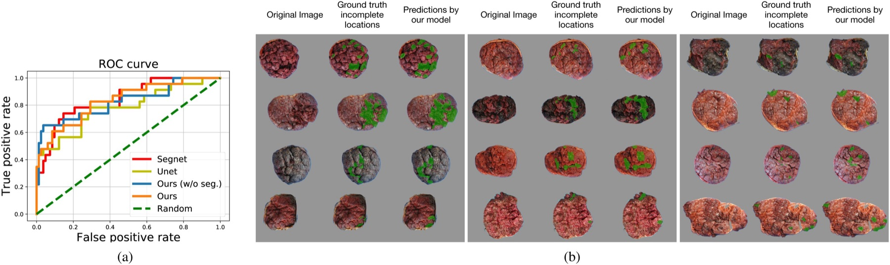

Página 6 · Hemorragia puerperal
Tecido: o secundamento e a profilaxia
É quanto a profilaxia com 10 UI de ocitocina IM reduz os casos de atonia. O degrau mais poderoso da escada é o que vem antes dela — a prevenção.
O degrau zero — a profilaxia que corta a atonia pela metade
Antes de qualquer degrau da escada existe um gesto que evita a hemorragia inteira: o manejo ativo do terceiro período. Assim que a criança sai, administra-se 10 unidades de ocitocina intramuscular — em todos os partos, vaginais e cesarianos. Este é o número que reenquadra tudo: a ocitocina profilática reduz em mais de 50% os casos de atonia uterina. Metade das hemorragias por útero molengo simplesmente não acontece porque essas 10 UI foram dadas na hora certa. Se, mesmo com a profilaxia, o útero não contrair, aí sim entra a sequência do “morreu”. Mas o gesto mais barato e mais eficaz de todos é este, e vem antes de qualquer degrau.
Ocitocina profilática é IM — a mesma pegadinha, do outro lado
Repare no espelho da pegadinha da página da atonia. Aqui, a ocitocina é intramuscular e a finalidade é profilática (10 UI). Na atonia estabelecida, a ocitocina era venosa e a finalidade era tratamento. É a mesma armadilha de via por finalidade, agora vista do lado da prevenção: previne no músculo (IM), trata na veia (EV). A banca monta questões que trocam as duas — descrevem uma profilaxia e oferecem a via venosa, ou vice-versa. Fixe o par.
A dupla função da ocitocina no terceiro período
A ocitocina do terceiro período faz duas coisas ao mesmo tempo: ajuda na contração uterina (que estanca o leito placentário) e favorece o secundamento — a saída da placenta. Não é só hemostasia; é também descolamento. Por isso ela é peça central do manejo ativo: contrai o útero e ajuda a placenta a se soltar e sair.
A régua dos 30 minutos
O secundamento — a saída da placenta — deve ocorrer em até 30 minutos. Passou disso com manejo ativo, é retenção placentária, e vira fator de risco para hemorragia. No Caso 3, lembre, o secundamento demorou 45 minutos — já configura o fator de risco que ajuda a explicar por que aquela paciente sangrou. Quando a placenta não sai em 30 minutos, as opções são extração manual ou, no caso de acretismo (placenta aderida anormalmente ao miométrio), histerectomia.
10 UI de ocitocina IM — profilaxia em todos os partos.
Até 30 min para o secundamento fisiológico (manejo ativo).
Retenção placentária — fator de risco para hemorragia.
Extração manual; se acretismo, histerectomia.
A regra que arma a próxima catástrofe — NUNCA aumentar a tração
E aqui está a regra de ouro que gancha a catástrofe seguinte. Na placenta retida, diante de leve tração + discreta massagem + ocitocina sem sucesso, o que se faz é aumentar a ocitocina e a massagem — jamais a tração. Nunca se aumenta a tração sobre o cordão. O motivo é dramático e tem nome próprio: puxar com força uma placenta que não descolou pode everter o útero — virá-lo do avesso. A conduta correta some com a força de tração e aposta na farmacologia (ocitocina) e na massagem. Puxar é a pior escolha porque a complicação que ela gera é mais catastrófica que a própria retenção.

A face materna da placenta com as áreas marcadas de “localizações incompletas”: uma superfície lobulada com um “buraco” no mosaico de cotilédones faz suspeitar de fragmento retido — diferente da laceração de canal, aqui o foco é a placenta incompleta.
Chen Y. et al., AI-PLAX, Computerized Medical Imaging and Graphics (2020), Elsevier open access. Licença CC BY 4.0.
Quiz — fixação
Placenta não dequitada após 40 minutos, com leve tração + massagem + ocitocina sem sucesso. Qual a conduta?
- B — a virada. Na retenção, sobe-se a ocitocina e a massagem, nunca a tração — e a extração manual é a via se não descolar. A regra existe porque tracionar arma a inversão uterina.
- A. Aumentar a tração é exatamente a manobra proscrita — pode everter o útero, uma complicação pior que a própria retenção.
- C. Histerectomia só entra no acretismo confirmado, não como primeiro passo numa retenção — pula a extração manual e contraria o “conservador antes do mutilante”.
- D. Esperar 2 horas passivamente contraria o mantra do tempo e prolonga o risco de hemorragia. Após 30 min já é retenção que pede conduta ativa.
Sobre a profilaxia da hemorragia no terceiro período, assinale a correta:
- B — a virada. 10 UI IM, universal, é a primeira linha da profilaxia e corta mais da metade das atonias. Dose, via, abrangência e impacto — tudo cobrável.
- A. Troca a via (profilaxia é IM, não EV) e restringe a “partos de risco”, quando é para todos. Dupla imprecisão.
- C. A profilaxia de rotina é ocitocina, não ergometrina (que ainda tem a contraindicação em hipertensas). Trocar a droga da profilaxia é o distrator.
- D. A profilaxia é universal justamente porque a atonia ocorre sem fator de risco — dispensá-la nos partos de baixo risco abre mão do gesto mais eficaz.
Puxar demais tem um preço com nome próprio: o útero pode virar do avesso. A inversão uterina é a catástrofe que a regra de não tracionar existe para evitar — e desvirá-la exige uma sequência que contraria o instinto.